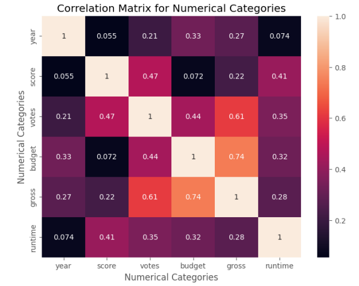
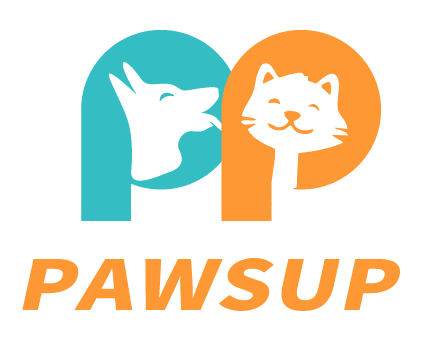

A project analyzing global layoff data from companies between 2020 and 2023, conducted separately using SQL + Tableau and Python (Jupyter).
SQL + Tableau: Cleaned and standardized data, then performed exploratory analysis to identify trends, including top companies and industries by layoffs, monthly layoff patterns, and rolling sums. Visualized insights in Tableau. (available in Tableau repository)
Python (Jupyter): Cleaned and standardized data, then performed exploratory analysis emphasizing the impact on the United States, uncovering and visualizing insights such as top US layoff locations and annual layoffs compared to the global average.

A Python project using pandas, seaborn, numpy, and matplotlib to clean data (handling duplicates, null values, and converting data types as needed) and visualize correlations between variables. Utilized category codes to convert string values into numerical ones for a more detailed correlation analysis.

A Tableau repository showcasing various interactive dashboard projects, demonstrating data visualization skills with diverse datasets and business insights.

A Power BI dashboard showcasing insights from a Data Professional Survey, analyzing key aspects such as overall job satisfaction, salary distribution by job title and industry, and favorite programming languages.

An Excel project analyzing Bike Sales data, featuring data cleansing, pivot tables, and a simple dashboard. It explores the relationship between the number of bikes sold and factors such as customer age, gender, commute distance, and marital status.

A Python project using pandas to cleanse an Excel Customer Call List file, addressing issues such as null values, poorly formatted phone numbers and addresses, names with special characters, and unhelpful columns.

A Progressive Web Application (PWA) developed in collaboration with 6 team members using the PERN stack (PostgreSQL, Express, React, Node.js).
Though the project site is no longer supported, I have a video walkthrough showcasing the application's features.